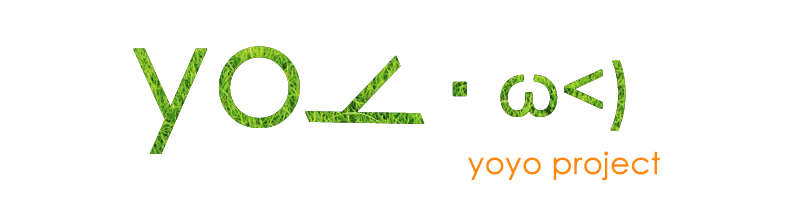
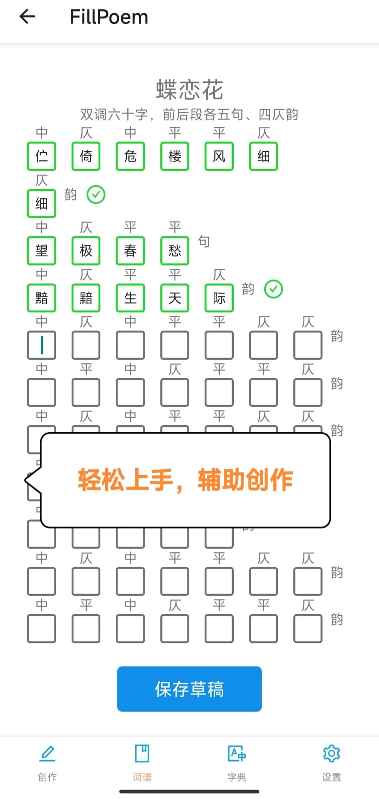
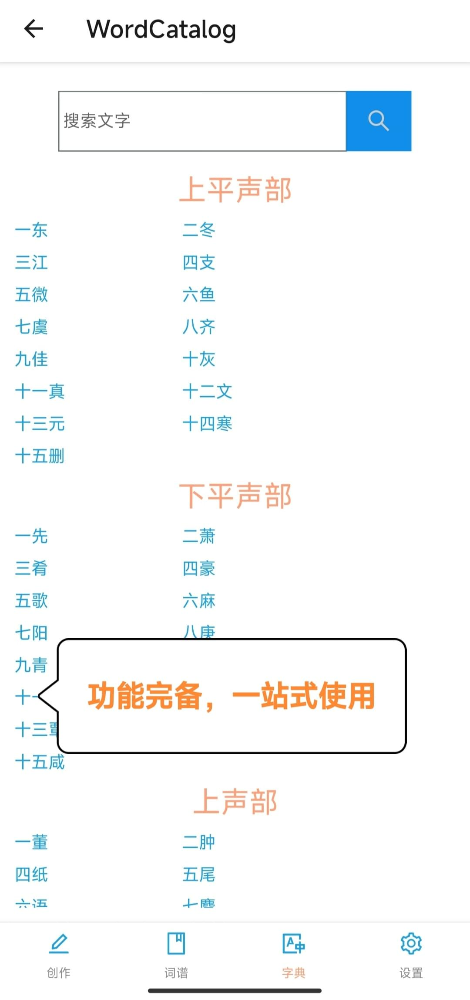
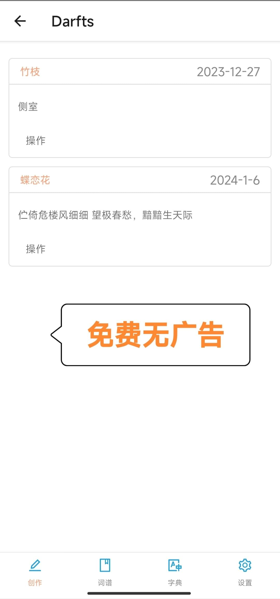
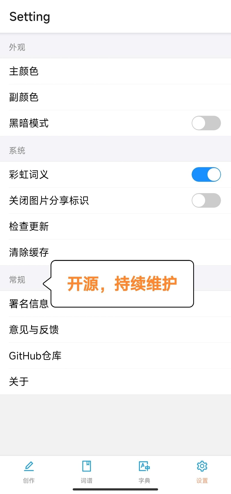
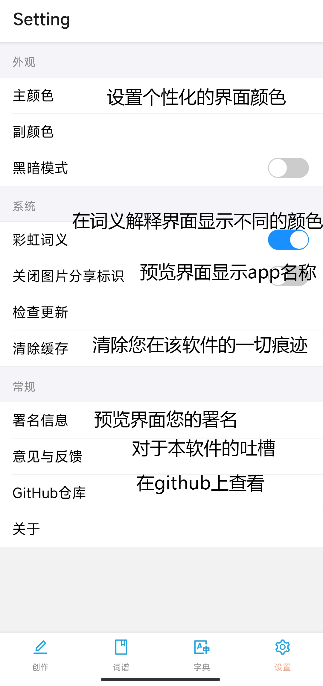

奉纸填词说明文档
fill poem 奉旨填词
一款填词app，基于React Native开发的移动端app，选择词牌名并让这款APP帮助你开始创作

下载
通过百度云盘下载 提取码：vine
除此之外我还在寻找其他简单快速（并且免费）的下载服务
为什么选择奉纸填词
我们有一个功能非常强大的网站：搜韵！
但是这个网站对移动端的适配并不算太友好，因此我做出了这个app并且加入了一些独特的功能。
以下是该app的优势：
- 易用：您可以非常轻松的上手本应用并使用它辅助您的创作
- 强大：拥有特色的填词方式以及相当完备的功能
- 干净：没有广告的困扰，页面干净不混乱
- 美观：简约与直观的形状搭配合适的色彩
- 安全：您的数据全部保存在本地，不用担心有人会剽窃您的内容
- 开源：该APP以MIT LICENSE在Github开源
- 免费：免费是理所应当的
- 持续维护：该APP持续更新功能，修改bug
- 可自定义：拥有丰富的自定义功能，打造适合你的app




如何使用
- 将下载好的APK安装到手机
我写好了词想进行韵律的检查
- 您可以在创作标签页点击韵律检查按钮
- 输入您创作的词牌名（请您自行保证输入的词牌名与词谱中的词牌名一致）
- 输入您创作的作品内容，作品内容请用【，】或【。】隔开
- 点击检查，您将会看到匹配情况
我想对照词谱进行填词
- 您可以在词谱界面选择自己希望填写的词谱，然后在随后的界面中选择相应的词格
- 点击对应的词格将进入填词界面
- 每个输入框可以并且仅可以输入一个汉字
- 您将可以直观的看到输入的汉字是否与输入框上部的平仄相符，若相符则输入框为绿色，否则为红色。若系统不能确定，则为蓝色，需要您手动确认
- 您输入的第一个韵字将会作为整首词的韵律（已知问题：变韵词，如菩萨蛮，将会被错误识别）
- 如果您已经填词结束或者希望暂存内容，可以点击下方的保存草稿按钮，然后您将可以在创作界面的草稿箱中找到对应的草稿
- 您可以在草稿箱中点击【操作-编辑】继续您的编辑并进行暂存
- 您可以在草稿箱中点击【操作-预览】来预览您的作品，在此界面可以将您的作品复制或者保存为图片
我想在填词的时候查找字典
- 您可以在填词时随意切换到字典标签，这并不会导致您正在进行的动作被覆盖
- 选择平水韵或者词林正韵，并在其中选择或搜索自己需要的内容
设置中的选项都有什么作用

贡献
反馈与意见
您的反馈是一种非常重要的贡献！
在您反馈时您最好在此Github仓库页面创建issue，并详细阐述您的问题，这样会方便我定位与解决问题。
除此之外您也可以通过软件内的【意见与反馈】功能来联系我，或者直接发送邮件到我的邮箱CharlesMin2001@outlook.com
PR
非常欢迎大家修改我的代码，并提交Pull Request，我会尽快审核并通过您的代码。
具体开发有关的内容可以查看下面的【开发指南】条目
我需要帮助！
如果你觉得这个项目还不错，希望能够参与其中并且您拥有以下的技能之一，那么我非常希望您能与我联系！（联系方式见上文）
技能树：
- IOS开发（如果您拥有苹果的开发环境或苹果开发者账号就更好了🫶）
- 前端开发（React Native）
- 平面设计（救救孩子的图标吧！ T^T）
- UI设计（呜呜）
- 古文顾问（在文字释义、诗词韵律等方面给孩子一点帮助）
开发指南
确保你拥有RN的开发环境
PS：欢迎你把项目用到期末项目之类的地方（或许……只要不在课堂之外的地方分发无LICIENSE副本都是允许的……）
安装依赖
npm install
运行
运行Metro：
npm run start
启动应用(安卓)：
npm run android
启动应用(ios):
npm run ios
⚠️：此项目依赖均未加入IOS pod
本项目依赖的部分库如下：
- ant-design/react-native
- react-native-camera-roll
- react-native-clipboard
- react-navigation/bottom-tabs
- react-navigation
- realm
部分库需要下载native文件，如果上述依赖出现问题还请您检查依赖是否正确下载、安装与链接
奉纸填词说明文档
2024/01/07/readme/fill_poem/